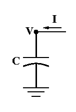

create soma
Double the duration and halve the amplitude (injected charge is constant).
Return the duration and amplitude to their default values (click in
the checkmark box with left mouse button).
Halve the duration and double the amplitude.
2. Insert passive conductance channels by clicking on the "pas" checkbox
in the "SingleCompartment" window and repeat part 1.
Notice that the voltage tends toward -70 mV,
which is the default reversal potential for the passive channel.
This reflects the fact that the initial condition v = 0
is not the steady state for this model.
In the "RunControl" set the Init field editor to -70 and repeat the run.
The graphs can be automatically rescaled to show the curves by invoking the Graph menu with the right mouse button and selecting the "View=Plot" menu item.
3. Change the stimulus amplitude to 1A (1e9 nA) and run.
Rescale the graphs to see the result.
The model is a poor representation of the physical system in this case.
4. Change the stimulus duration to 0.01 ms.
The simulation is a poor representation of the model in this case
Change the number of Points plotted/ms to 100 and dt to 0.01 ms and repeat the run.
5. Increase the amplitude to 1e4 nA, cut the duration to 1e-5 ms,
increase Points plotted/ms to 1e5, and let 'er rip.
After a few seconds of eternity, stop the simulation.
Select "Use variable dt" and try again.
When you're done, use "NEURONMainMenu / File / Quit" to exit NEURON.